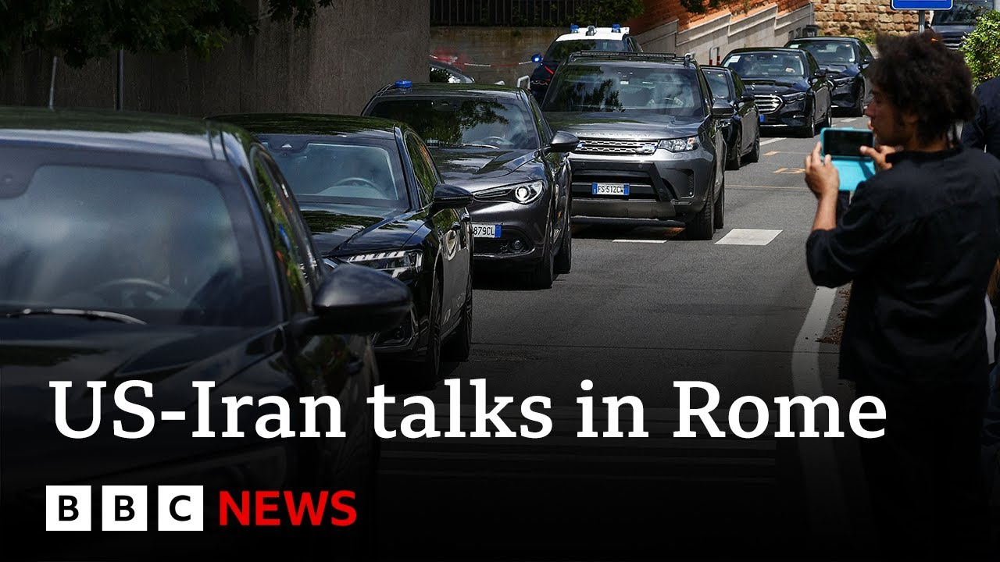

【伊朗和美国在罗马恢复核谈判 | BBC新闻】
Summary: Iran has accelerated its nuclear program, with breakout time for weapons-grade uranium nearing zero, while IAEA access to enrichment sites is limited, making ongoing Rome negotiations critical. US envoy aims for a diplomatic solution, but Iran must cease terror sponsorship and nuclear pursuits. Israel doubts success, with reports of advanced attack plans, as Iran warns of retaliation. Analyst notes complex talks, with uranium enrichment as a key issue and supreme leader's stance pivotal.
摘要： 伊朗加速了核计划，武器级铀的突破时间接近零，而国际原子能机构对浓缩铀设施的访问受限，使得正在罗马进行的谈判至关重要。美国特使寻求外交解决方案，但伊朗必须停止支持恐怖主义和核追求。以色列对成功持怀疑态度，有报道称其攻击计划已取得进展，伊朗则警告将进行报复。分析人士指出谈判复杂，铀浓缩是关键问题，最高领袖的立场至关重要。

⏱️ Estimated Reading Time: 6 min
Iran has accelerated its nuclear program.
伊朗加速了其核计划。
The so-called breakout time, at which point Iran will have produced enough weapons-grade uranium for a bomb, is close to zero, perhaps a matter of weeks.
所谓的突破时间，即伊朗生产出足够制造一枚炸弹的武器级铀的时间，已接近零，可能只需几周。
Whether they have the technical know-how to develop a bomb is another question.
他们是否具备开发炸弹的技术知识是另一个问题。
The IAEA, which inspects the declared enrichment sites, one of them an underground facility in Natans, the other buried inside a mountain at Foda, do not have the access they once had.
国际原子能机构检查已申报的浓缩铀设施，其中一个是纳坦兹的地下设施，另一个是福达山内的设施，但访问权限已不如从前。
There is a lot the international community does not know about Iran's intentions.
国际社会对伊朗的意图知之甚少。
All of which makes today's negotiations currently ongoing in Rome, the fifth round of talks between the White House and Iran all the more critical.
所有这些使得目前在罗马进行的第五轮白宫与伊朗的谈判更加关键。
The US special envoy Steve Wickoff is there in Italy with orders to seal a diplomatic solution which Donald Trump believes is in reach.
美国特使史蒂夫·威科夫在意大利，奉命达成外交解决方案，唐纳德·特朗普认为这是可行的。
I want to make a deal with Iran.
我想与伊朗达成协议。
I want to do something if it's possible.
如果可能的话，我想采取行动。
But for that to happen, it must stop sponsoring terror, halt its bloody proxy wars, and permanently and verifiably cease its pursuit of nuclear weapons.
但为此，伊朗必须停止支持恐怖主义，停止血腥的代理人战争，并永久且可核查地放弃追求核武器。
They cannot have a nuclear weapon.
他们不能拥有核武器。
The Israelis think it's all futile.
以色列人认为这一切都是徒劳的。
In fact, some months ago, the defense minister, Israel Kat, said he thought Iran was more exposed than ever to an attack on its nuclear facilities.
事实上，几个月前，国防部长以色列·卡特表示，他认为伊朗的核设施比以往更容易受到攻击。
A series of reports this week based on leaked US intelligence suggests the Israeli air force is now well advanced in those plans with or without US backing.
本周一系列基于美国情报泄露的报道表明，以色列空军现在在这些计划中已取得很大进展，无论是否有美国的支持。
Iran's defense minister warned on Sunday that will not hesitate to retaliate were to come under attack.
伊朗国防部长周日警告称，如果遭到攻击，将毫不犹豫地进行报复。
The White House seems sufficiently concerned that Donald Trump raised this with Benjamin Netanyahu when they spoke last night following the murder of the two Israeli diplomats in Washington.
白宫似乎非常担忧，唐纳德·特朗普昨晚在与本杰明·内塔尼亚胡通话时提到了这一点，此前两名以色列外交官在华盛顿遇害。
Hammed Riza Azizi is an Iran analyst.
哈米德·里扎·阿齐兹是一位伊朗问题分析人士。
He gave us his view of the talks.
他向我们谈了他对谈判的看法。
Um I think uh as we proceed with the negotiations and now we enter the fifth round uh it's getting more and more uh complicated.
嗯，我认为随着谈判的进行，现在我们进入第五轮，情况变得越来越复杂。
We saw how tense uh the um whole uh issue was over the past few days and you know the statements coming from both sides.
我们看到过去几天整个问题有多么紧张，你知道双方的表态。
The red lines that uh both Donald Trump I mean the US side and also the Iranian supreme leader tried to depict all this means that now talks have entered into a very serious stage.
唐纳德·特朗普，我是说美国方面，以及伊朗最高领袖试图描绘的红线，意味着现在谈判已进入非常严肃的阶段。
On one hand, uh the very fact that they are still um you know committed to this diplomatic path could be a good sign.
一方面，他们仍然致力于这条外交道路的事实可能是一个好迹象。
Uh but then the core issue seems to be uh the ability Iranian ability to enrich uranium which uh some US officials especially special envoy Vitkov have said that it is a red line.
但核心问题似乎是伊朗浓缩铀的能力，一些美国官员，特别是特使维特科夫，表示这是一条红线。
But on the other side, has you know completely ruled out the possibility of stopping enriching uranium within the Iranian territory.
但另一方面，伊朗完全排除了在其领土内停止浓缩铀的可能性。
Yeah.
是的。
I mean, as you suggest, so often it comes to the internal conversation within Iran.
我是说，正如你所提到的，这常常涉及伊朗内部的讨论。
It's the doves versus the hawks and it's the signaling that we get from the supreme leader that we have to watch.
这是鸽派与鹰派的较量，我们必须关注从最高领袖那里得到的信号。
Does he want to deal?
他想达成协议吗？
uh if he didn't want to deal I think uh the Iranian delegation wouldn't have been uh engaged in negotiations and they wouldn't have uh been in Rome uh today for a new round.
如果他不想达成协议，我认为伊朗代表团就不会参与谈判，今天也不会在罗马进行新一轮谈判。
So what we have seen over the past few months particularly uh since February when uh K first ruled out negotiations and uh he basically said that it is not honorable not logical to talk and then he allowed this.
因此，我们在过去几个月看到的情况，特别是自2月以来，当K首次排除谈判并基本上说谈判既不光荣也不合理，然后他又允许了谈判。
It seems that uh there seems to be sort of a division of labor.
似乎存在某种分工。
So at the executive level, of course, the administration, the foreign ministry in this case is in charge of kind of actual negotiation and diplomatic engagement.
因此，在执行层面，当然，在这种情况下，政府和外交部负责实际的谈判和外交接触。
But as everybody especially the United States administration knows that it is in the end a decision of the supreme leader.
但正如所有人，特别是美国政府所知，最终决定权在最高领袖手中。
He comes in from time to time to clarify the red lines uh in order in his uh his view to uh basically you know give uh enough uh material uh to bargain and at the same time um basically uh close the door to any sort of u you know unwanted compromise that actually the more moderate administration might be willing to accept but not himself.
他时不时地介入以澄清红线，在他看来，基本上是为了提供足够的谈判材料，同时关闭任何不受欢迎的妥协之门，这些妥协可能是较为温和的政府愿意接受的，但他自己不愿意。
Hammed the days a speaking to me a little time ago.
哈米德不久前与我交谈。